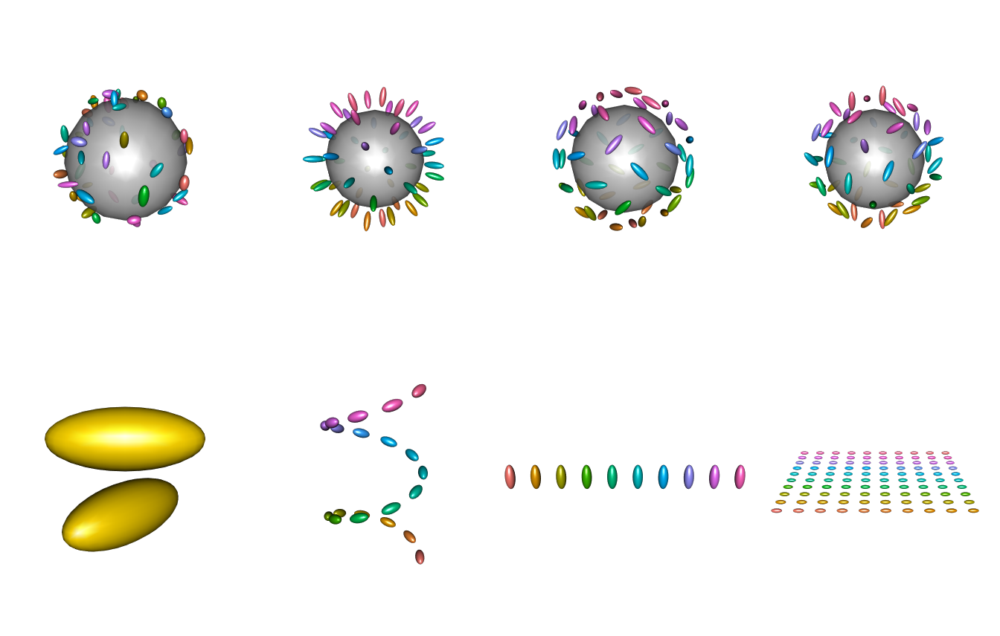
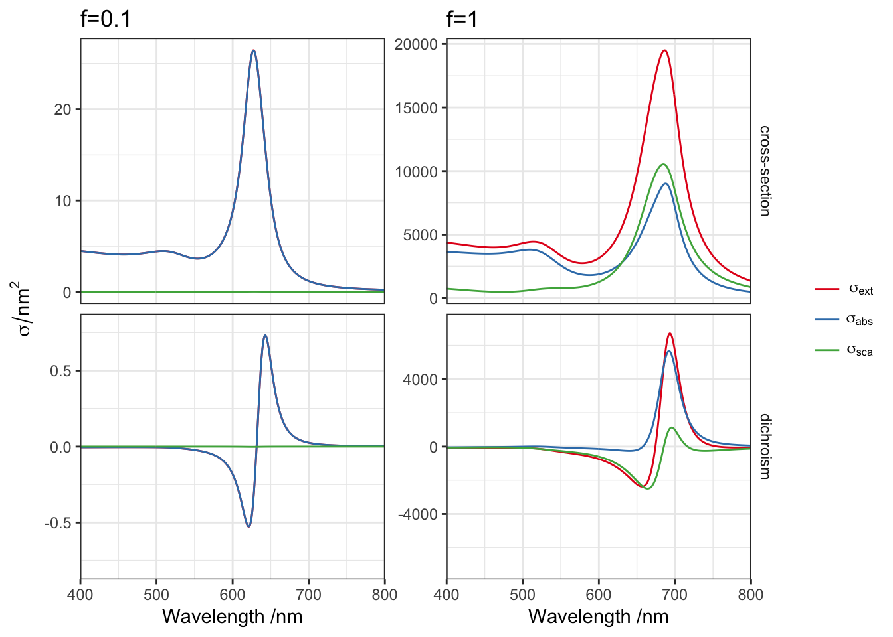

# dielectric function
gold <- epsAu(seq(400, 800))
# define a cluster of particles
model <- function(f=1, ...){
cl <- cluster_dimer(d = 100*f, a=50*f, b=20*f, c=20*f, dihedral = pi/4)
spectrum_oa(cl, gold, Nsca=50)
}
d1 <- model(0.1)
d2 <- model(1)
symmetrise_scale <- function(p, axis = c("y", "x"), facet = "dichroism"){
axis <- match.arg(axis)
gb <- ggplot_build(p)
layout <- gb$layout$panel_layout
vars <- setdiff(names(layout), c("PANEL", "ROW", "COL", "SCALE_X", "SCALE_Y"))
facets <- layout[,vars]
ranges <- gb$layout$panel_ranges
type <- switch(axis, "x" = "x.range", "y" = "y.range")
lims <- sapply(ranges, "[[", type)
fname <- as.character(vars[1])
lims2 <- as.vector(t(tcrossprod(apply(abs(lims), 2, max), c(-1,1))))
dummy <- setNames(data.frame(rep(facets, each=2), lims2), c(fname, axis))
if("type" %in% names(dummy))
dummy <- dummy[dummy$type == facet, , drop=FALSE]
switch(axis,
"x" = p + geom_blank(data=dummy, aes(x=x, y=Inf), inherit.aes = FALSE),
"y" = p + geom_blank(data=dummy, aes(x=Inf, y=y), inherit.aes = FALSE))
}
p1 <- ggplot(d1, aes(wavelength, value, color=variable)) +
facet_grid(type~., scales="free") + geom_line() +
labs(x = "Wavelength /nm", y = expression(sigma/nm^2),
colour = "") +
scale_x_continuous(expand=c(0,0)) +
scale_colour_brewer(palette="Set1", labels=parse(text=c('sigma[ext]','sigma[abs]','sigma[sca]')))
p2 <- p1 %+% d2
pp1 <- symmetrise_scale(p1, "y") + ggtitle("f=0.1")
pp2 <- symmetrise_scale(p2, "y") + ggtitle("f=1")
gg <- cbind(ggplotGrob(pp1)[,-c(5:9)], ggplotGrob(pp2)[,-c(1,2)])
library(grid)
grid.newpage()
grid.draw(gg)